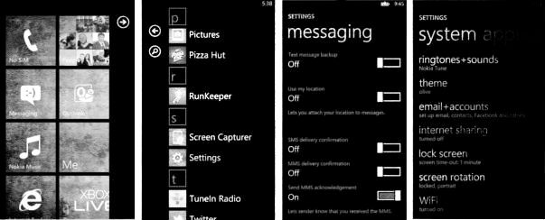

windows phone
Windows Phone e l ultimo arrivato nel mondo della telefonia mobile. Sempre per semplificare al massimo, possiamo dire che oggi Windows e conosciuto come Nokia, per la precisione Lumia. Windows Phone e l ultimo arrivato nel mondo della telefonia mobile. Sempre per semplificare al massimo, possiamo dire che oggi Windows e conosciuto come Nokia, per la precisione Lumia. Un altro vantaggio e che si tratta del sistema migliore per essere usato come navigatore satellitare siccome ha le mappe all'interno
Interfacce
Apple,Android,windows Phone
Android e un sistema evoluto, ma la bravura di Google e stata quella di creare un interfaccia che permetta all utente piu smaliziato di passare ore a smanettare, senza pero creare un sistema eccessivamente complicato per chi e alle prime armi
iPhone ha sempre spinto molto su un sistema di facile utilizzo e lo si puo notare fin dalla prima accensione. Poche funzioni, ma che funzionano bene, nel puro stile Apple.
Windows phone e caratterizzato da un design minimale.I dispositivi Windows Phone sono minimali, hanno una schermata iniziale composta da Tile, delle specie di piastrelle che possono essere spostate, aggiunte o tolte, ridotte o ingrandite in base alle necessita. 